視覺藝術教育:分歧的模式 在本次演講中，Winner教授將介紹視覺藝術教育的方法，並討論她在Project Zero中，針對視覺藝術教育所做的研究。Winner 教授也會發表她針對「工作室思維」的研究，也就是如何培養廣泛的思維習慣（包括批判性思維和創造力）， 以及如果透過學習某種藝術形式，而培養出這些思維習慣，或許可以推廣到另一種藝術形式的表演中。
優質藝術教育的美味實踐：如何做好一塊藝術教育蛋糕
Pascoe
教授將討論如何與藝術教師合作，幫助教師增能，了解、發展和提供藝術教育。
但要謹記，要做蛋糕，不僅僅只是列出所有的原料就好；也不單只是要重視混合原料和烘烤的過程；
做蛋糕必須要用心、有意、有目的；而且也要享受製作和食用蛋糕的愉悅和滿足感。
這次演講的主題並不僅僅是想玩文字遊戲。會訂這個主題，是因為講者一生，不管是個人生涯或專業興趣，都不斷推動卓越的藝術教育。
那有效的藝術教學會有哪些顯著特點？我們所謂的優質藝術教育，又代表什麼意思？優質藝術教育的理念如此難以捉摸，到底代表什麼意思？
Pascoe
教授今天要與我們分享的重點是學校的藝術教育。在社區的藝術學習中，學校內的教育只是一小部分。
但是，學校的藝術對於我們整個社會的福祉和健康有重要的意義。
英文常常使用品質這個詞，但大家對其含義卻沒有一定的共識。Pascoe
教授談到藝術教育的品質時，
他的重點是藝術教育的獨特屬性或特點，以及我們要如何識別優良的作法。
Pascoe
教授也會談到藝術教育的標準，以及如何以深思熟慮和批判的角度來衡量藝術教育的卓越程度。
為了探索這些想法，Pascoe
教授將與我們分享他的一些研究結果和經驗。
Janet Barrett「美國伊利諾大學香檳分校榮譽教授」
Karen Neervoort「荷蘭方提斯應用科技大學藝術與表演學院院長」
石崎和宏「日本筑波大學藝術學系教授」
Daniel Harris「澳洲墨爾本皇家理工大學教授」
透過國際美感教育領域的專家學者，由自身之實務經驗及研究觀察出發， 分享對於「藝術教育於疫情期間施行概況」及「藝術教育於疫情下的因應與轉向」兩大議題之洞察，並對比我國疫情下美感教育之發展， 互動探討疫情時代下之國際美感教育發展動向。
亞太地區美感教育研究室
計畫主持人 洪詠善研究員
美感與設計課程創新計畫
幼兒園美感教育扎根計畫
藝起來尋美
跨領域美感教育卓越領航計畫
邀請教育部美感教育中長程計畫之不同團隊代表，分享所屬美感教育計畫的實踐歷程， 論題主要涵蓋學生於其間的學習經驗、學習表現及面臨之挑戰等，並根據計畫執行經驗提出對於未來美感教育推動之建議。
分享學校：
分享學校：
分享學校：
分享學校：
分享人：
分享學校：
主講團隊:
主講人：
主講人: 國立臺北藝術大學藝術與人文教育研究所助理教授 吳岱融
主講人:國立清華大學副教授 劉淑英
主講人: 呂瑩瑩園長
主講人：
主講人：國立臺灣藝術大學人文學院師資培育中心副教授 賴文堅
主講人：新北市秀峰國小教師 鄭淑慧
國立臺北藝術大學藝術與人文教育研究所教授 林劭仁
台灣設計研究院副院長 艾淑婷
主講人：文化大學景觀學系主任教授 郭瓊瑩
美感踏查Ⅰ:自由主義之路
紫藤廬被指定為市定古蹟之前後究竟發生了那些事？周德偉、殷海光、胡適、雷震與《自由中國》雜誌的關係？馬廷英教授來台後又歷經了怎樣的政治風暴？
除了一般罪犯，台北刑務所裡還有許多人因政治、叛亂、戰爭事件而被關押，雖然這座石造監獄目前只剩下北邊的圍牆及運出死刑犯屍體的門，但這些故事於現下仍具有啟發性，使大眾從中獲得省思。
美感踏查Ⅱ:溫羅汀水岸地圖
隨著時空的更迭，以101為標的的水泥色系的台北市景，已難以想像這座大城市曾是一片由霧裡薛圳、大坪林圳及瑠公圳交織成水道縱橫的阡陌農地；從大坪林地區開始往北一路交集、貫穿整個大台北的這三條大圳如今消失到哪裡去了?
沿著隱埋在金華、永康街區的第二霧裡薛圳的支線軌跡，答案或許將悄然浮現。
美感教育公民論壇-化美成識
「公民咖啡館」是由Juanita Brown及David
Issacs所提出，其實施目的在展開對話，希望透過議題討論的方式，讓一群人坐下來，互相傾聽對方的想法，就像在咖啡館喝咖啡聊天一樣。因此，「公民咖啡館」是透過彈性的小團體討論、對話，最後產生團體智慧。
透過討論過程，也將引發參與者對於所討論議題的反思，相互的去分享知識，進而找到新的行動契機。此次美感教育公民論壇即以公民咖啡館之公民參與模式辦理，嘗試凝聚各方參與者對於美感教育相關議題的共識。
桌長名單:
國立屏東大學科學傳播學系教授 鄧宗聖
國立臺北藝術大學舞蹈學院教授 張中煖
國立高雄師範大學講師 呂瑞芬
國立臺灣藝術大學人文學院師資培育中心副教授 賴文堅
國立臺北藝術大學藝術與人文教育研究所助理教授 吳岱融
國立臺東大學幼兒教育學系副教授 施淑娟
文化大學景觀學系主任教授 郭瓊瑩
國立清華大學幼兒教育學系助理教授 曹亞倫
以下站點可租借/停放U-bike：
政治大學公企中心停車場[現金繳費機]及[出口悠遊卡感應機]，自即日開放使用。 本中心停車場採車牌辨識系統繳費方式，入場時自動進行計費; 為有效疏解離場車潮，自即日起，得採以下任一方式繳費離場：